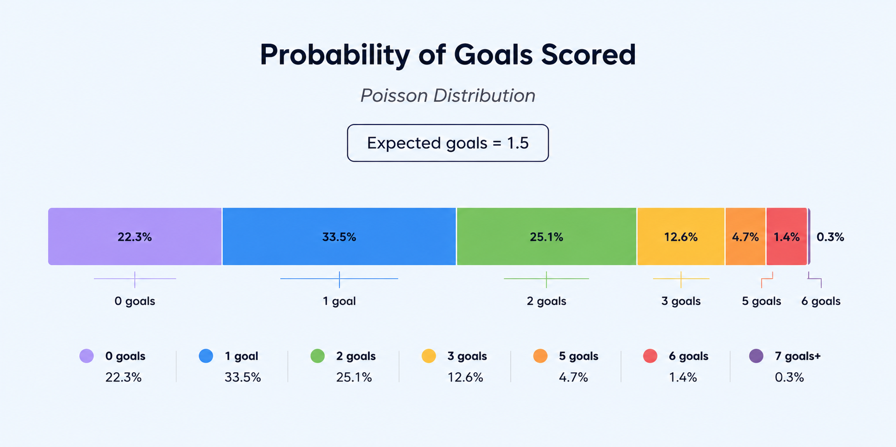
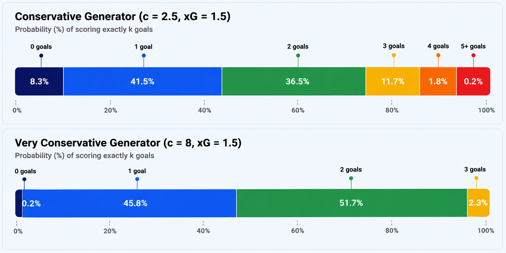

How it works
Super 6 Generator generates Super 6 predictions for the live round based on expected goal (xG) projections from PitchOdds. The generator attempts to replicate the unpredictability of football by using a range of weighted probabilities and goal distributions to randomly generate a scoreline for each of the six fixtures. If you're unsure of a fixture, Super 6 Generator is a great way to find some inspiration, with five levels of randomness available to play with - "xG Rounded", "Very conservative", "Conservative", "Volatile" and "Random".
xG Rounded and Random
The most basic of the five options, xG Rounded and Random, offer the extremes of the generator.
xG Rounded pulls expected goals directly from the PitchOdds API and rounds them to the nearest goal. For example, if Ipswich and Liverpool are projected 1.1 and 2.7 goals respectively against each other then the generator will return Ipswich (1) - (3) Liverpool.
Random uses the built-in JavaScript methods Math.random() and Math.floor() in the form Math.floor(Math.random() * 7). Math.random() produces a pseudorandom decimal number between 0 (inclusive) and 1 (exclusive) which is then multiplied by 7 and rounded down by Math.floor() to produce a number between 0 and 6.
Volatile
Volatile generates a scoreline by putting xG projections into a Poisson Distribution.
A Poisson Distribution is a discrete statistical distribution that gives the probability of an event occurring a certain number of times in a fixed interval, given that the average (mean) number of occurrences is known for that interval. For example, if it is known that on average 10 cars pass a certain spot every hour, a Poisson Distribution will give probabilities for any number of cars passing that spot in any given hour. The Poisson probability is given by:
\[ P(X=k)=\frac{\lambda^k e^{-\lambda}}{k!} \]
Where:
\( e \) = Euler's number (mathematical constant)
\( \lambda \) (lambda) = mean (or rate)
\( k \) = number of occurrences being predicted
\( P(X=k) \) = probability of \( k \) occurrences
This can be applied directly to football matches, which have a fixed interval of 90 minutes. Although the average (mean) goals scored by a team might not necessarily reflect the opponent they are playing, expected goals can be used as a suitable replacement such that:
\[ P(k \text{ goals scored})=\frac{\text{xG}^k e^{-\text{xG}}}{k!} \]
From this equation a distribution of probabilities can be derived. An example of a team that has 1.5 xG for a match is given below:

From this distribution, a number of goals for a team can be randomly selected with a weighted chance towards the expected goals for that team. Similarly to the random goal generator, Math.random() produces a pseudorandom number x where 0 ≤ x < 1. And that number will be used to select the of goals - from the example above if \(x\) falls between the cumulative probabilities of 0.223 and 0.558, then 1 goal would be selected.
Conservative and Very Conservative
Very conservative and Conservative use a modified Poisson Distribution which forces the generated goals to have a more concentrated range of outcomes. Firstly, a Poisson alternative weighting model is used to determine weights: \[ w_k \propto \frac{\lambda^k}{(k!)^c} \]
Where:
\( w_k \) = the weight assigned to \(k\) occurrences
\( \lambda \) = the calibrated model parameter (derived from expected goals)
\( \text{k} \) = the number of goals being predicted
\( c \) = the concentration parameter
The concentration parameter controls how concentrated the outcomes become. A higher value produces a more concentrated range of outcomes. In this case, Conservative uses 2.5 and Very conservative uses 8.
Calibration is then needed. Increasing the concentration causes the mean of the resulting distribution to differ from the original xG. To correct for this, a formula can be applied to xG depending on the concentration. The following formulas were found to make the mean of the resulting distribution match the xG for this model:
Conservative:
\(\lambda = 2.35xG^{1.855}\)
Very conservative:
\(\lambda = 29.775xG^{5.607}\)
After this step, the values for \(\lambda\) and \(c\) can be plugged into the weighting equation. However, this produces weights that are only relative and need to be normalised into probabilities that ensure all weights add up to 1 (100%). This is done by taking each weight and dividing it by the sum of all the weights.
The number of goals is then selected in the same way as what is used for Volatile, but with much tighter ranges as shown below:
